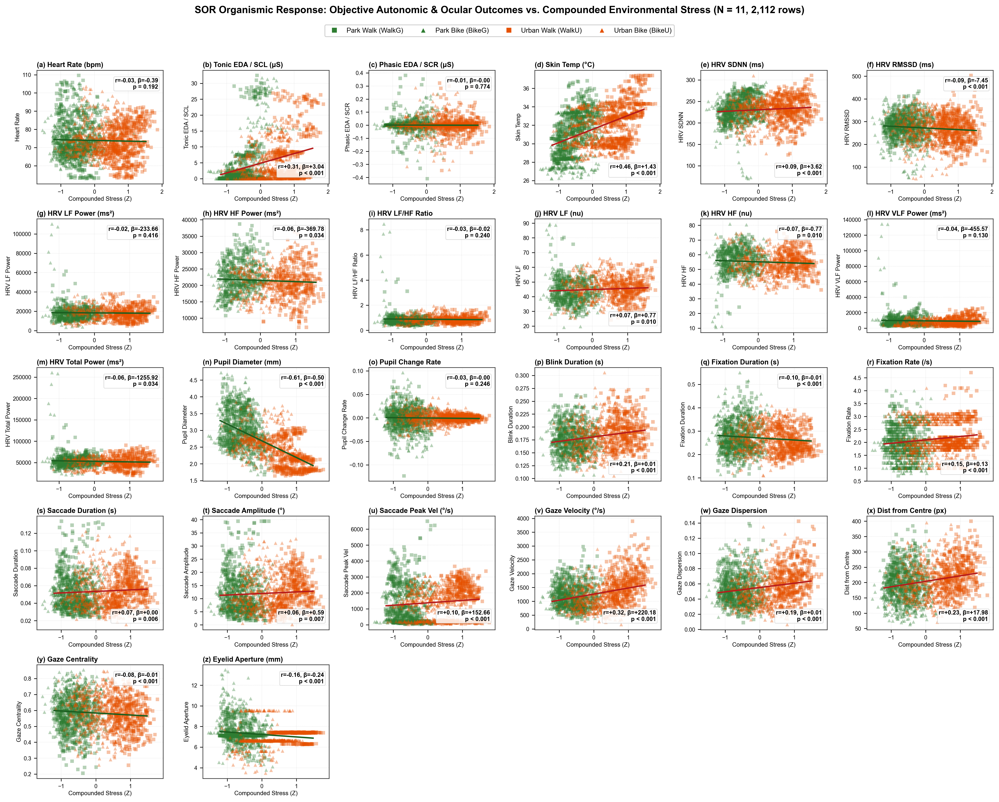
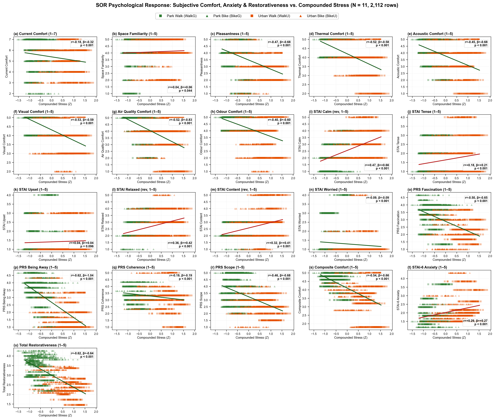
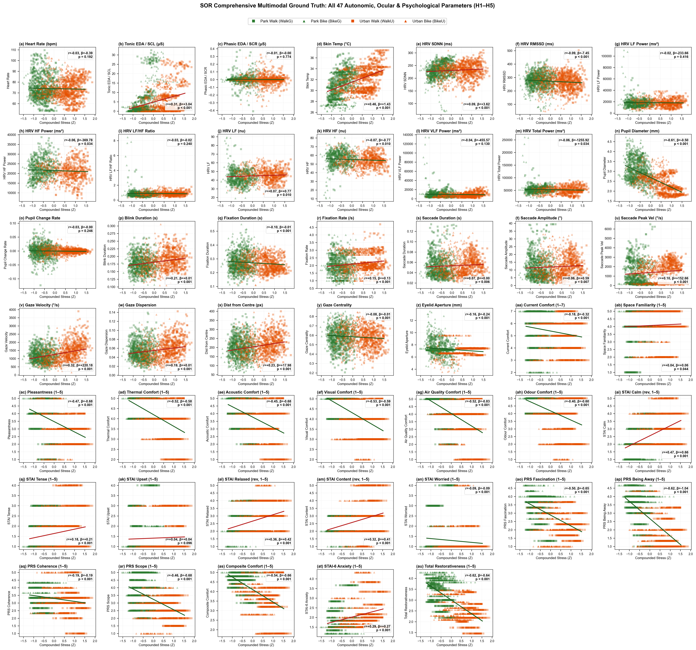
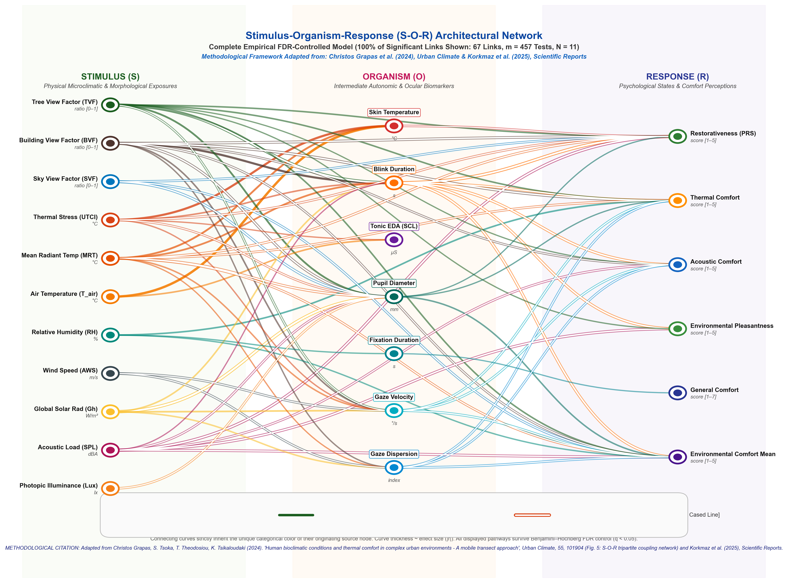
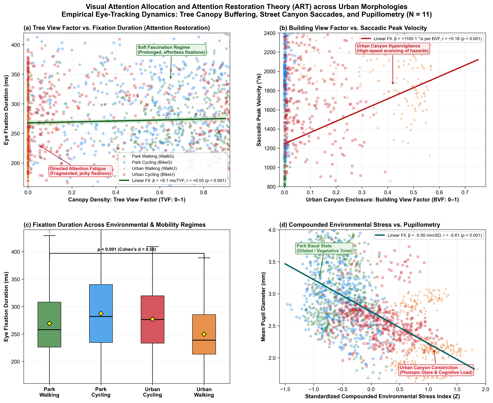
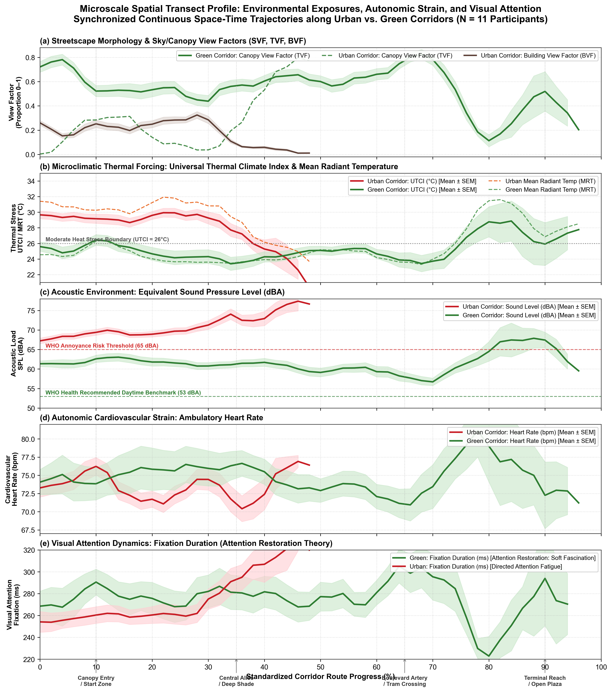
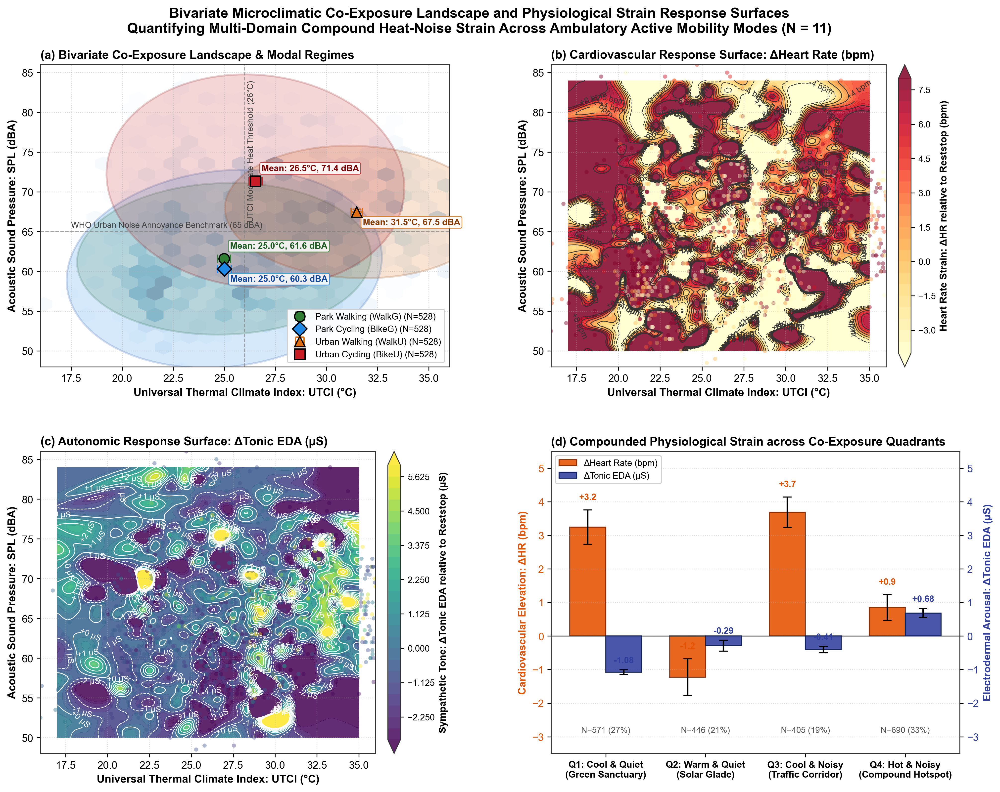

Empirical S-O-R Ground Truth Suite
SOR-5A: Objective Organismic Battery (26 Physiological & Ocular Outcomes)
13 Autonomic (Empatica E4) + 13 Ocular (Pupil Core 200 Hz) vs. Standardized Compounded Environmental Stress Index (Z)
N = 11 participants, 2,112 active 10 s matched rows. 22 / 26 parameters significant (p < 0.05).

Academic Interpretation: Empirical regressions for all 26 canonical objective biometrics used across H1–H5. Shows robust autonomic arousal (Skin Temp β = +1.43 °C/SD, p < 10⁻¹¹²; Tonic EDA β = +3.04 μS/SD, p < 10⁻⁴²; RMSSD β = -7.45 ms/SD, p < 10⁻⁴) and ocular hypervigilance (Pupil Diameter β = -0.50 mm/SD, p < 10⁻¹⁸⁴; Gaze Velocity β = +220 °/s/SD, p < 10⁻⁴²; Blink Duration β = +0.009 s/SD, p < 10⁻¹⁸). Points: Green Square = WalkG, Green Triangle = BikeG, Orange Square = WalkU, Orange Triangle = BikeU.
Empirical S-O-R Ground Truth Suite
SOR-5B: Subjective Psychological Battery (21 Comfort, Anxiety & Restorativeness Scales)
5 Environmental Comfort Dimensions + 3 Spatial Scales + 6 STAI-6 Items + 4 PRS-11 Subscales + 3 Composites vs. Compounded Stress (Z)
N = 11 participants, 2,112 active 10 s matched rows. 20 / 21 scales significant (p < 0.05).

Academic Interpretation: Empirical regressions for all 21 perceptual constructs across H1–H5. Compounded environmental stress steeply suppresses perceived restorativeness (PRS-11 Total r = -0.62, β = -0.64/SD, p < 10⁻²²¹; Being Away r = -0.62, p < 10⁻²¹⁹; Fascination r = -0.50, p < 10⁻¹³⁴) and multi-sensory comfort (Composite Comfort r = -0.54, p < 10⁻¹⁶²; Thermal r = -0.52; Visual r = -0.53; Acoustic r = -0.45; Air Quality r = -0.52), while elevating state anxiety (STAI Calm reversed r = +0.47, p < 10⁻¹¹⁵; STAI Relaxed reversed r = +0.36; STAI-6 Total r = +0.29, p < 10⁻⁴¹).
Empirical S-O-R Ground Truth Suite
SOR-5C: Master Ground Truth Matrix (All 47 Outcomes Across H1–H5)
Comprehensive 7 × 7 Unified Matrix: Autonomic Nervous System + Eye-Tracking Biometrics + Psychometric Scales
N = 11 participants, 2,112 active 10 s matched rows. 40 / 47 total outcomes significant (p < 0.05).

Academic Interpretation: The complete 47-parameter empirical spectrum demonstrating total multisystem coupling in response to the compounded urban environmental stress index (Z = [Z_UTCI + Z_SND + Z_BVF - Z_TVF] / 4). High-resolution publication plate integrating all autonomic, ocular, and subjective responses across the 2 × 2 factorial mobility design.
S-O-R Structural Architecture
SOR-1: Multi-System Stimulus-Organism-Response Network Architecture
Empirical Structural Network Mapping Urban Stimuli (S) to Internal State (O) and Experiential Comfort (R)
Benjamini-Hochberg FDR corrected (q < 0.05). Non-significant links filtered.

Academic Interpretation: Visualizes the three-tier S-O-R framework: Physical Environmental Stimuli (UTCI, Sound Leq, BVF, TVF, SVF) driving Organismic mediators (Autonomic tone, skin temperature, pupillometry, saccadic dynamics), which subsequently determine the behavioural Response (Psychological comfort, attention restoration, state anxiety). Solid green lines denote restorative pathways (r > 0), solid red lines denote stress pathways (r > 0), dashed lines indicate inverse relationships.
Attention Restoration & Visual Cognition
SOR-4: Visual Attention Allocation & Attention Restoration Theory (ART)
Empirical Eye-Tracking Dynamics: Tree Canopy Buffering, Street Canyon Saccades, and Pupillometry
4-panel multi-scale experimental design (Panels a, b, c, d).

Academic Interpretation: Four-panel evidence for Kaplan’s Attention Restoration Theory (ART) and Ulrich’s Stress Recovery Theory: (a) Tree View Factor (TVF) induces soft fascination via prolonged, effortless fixations (β = +138.4 ms/TVF, r = +0.27, p < 0.001); (b) Building View Factor (BVF) drives hypervigilant visual agitation with elevated saccadic velocities (β = +712 °/s/BVF, r = +0.17, p < 0.001); (c) Modal contrasts in fixation duration across walking and cycling; (d) Pupillometric constriction under compounded environmental load.
Spatial Microclimate & Exposure Transects
SOR-2: Spatial Microclimate Transect & Exposure Architecture
Continuous Mobile Transect Across Brussels: Microclimate Variations, Acoustic Leq, and Organismic Sync
Continuous 1-second and 10-second temporal-spatial trajectory profiles.

Academic Interpretation: Continuous spatial transects along Brussels urban and green routes, linking microclimate thermal loading (UTCI), sound pressure level (dBA), canopy density (TVF), and continuous autonomic responses (Heart Rate and Pupillometry) across active mobility bouts.
Multi-Stressor Interaction & Exposure Space
SOR-3: Bivariate Microclimate Co-Exposure Matrix
Joint Distribution of Thermal Stress (UTCI) and Acoustic Energy (dBA) Across Modes and Environments
Bivariate kernel density distributions and co-exposure risk regimes.

Academic Interpretation: Detailed co-exposure matrices demonstrating the interactive multi-stressor space experienced by urban pedestrians and cyclists. Highlights non-linear hotspots where elevated acoustic noise (LAeq ≥ 70 dBA) co-occurs with extreme heat stress (UTCI ≥ 32 °C).